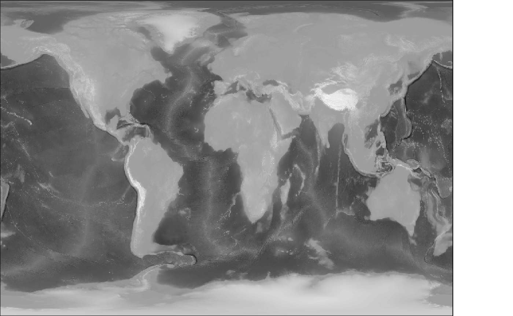
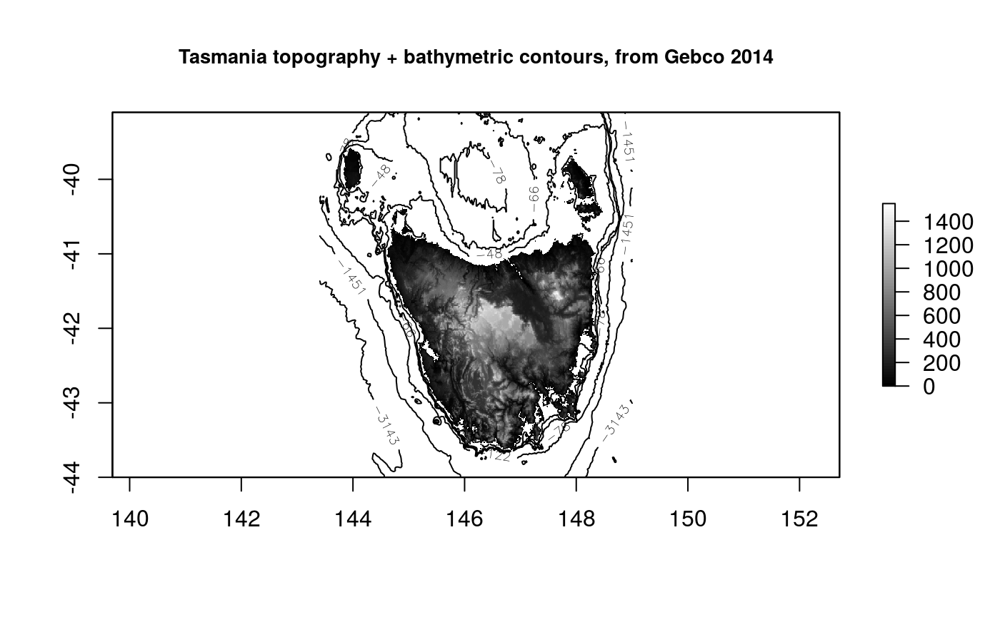
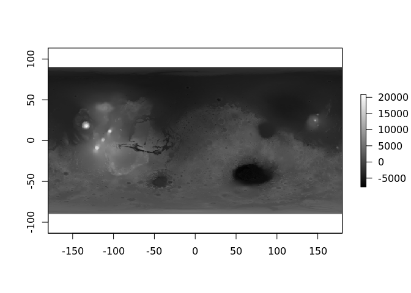
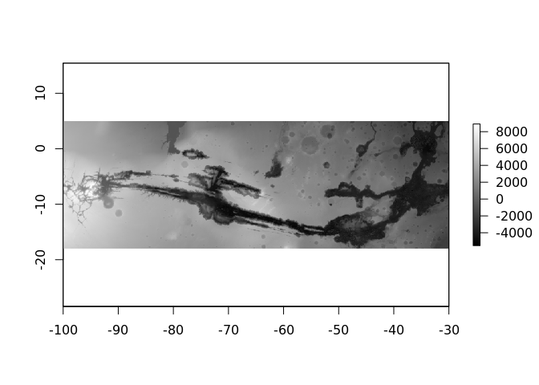
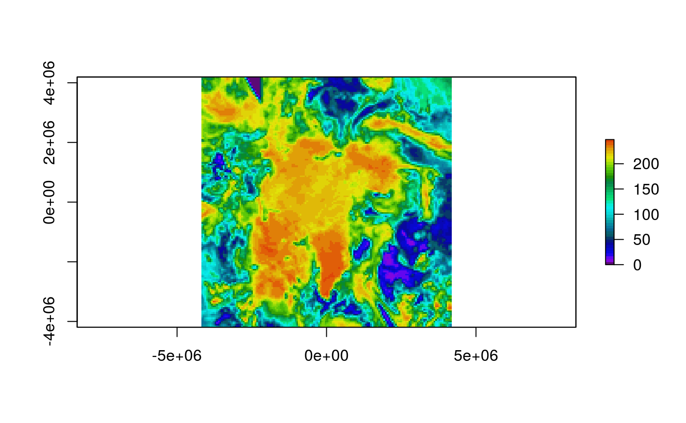
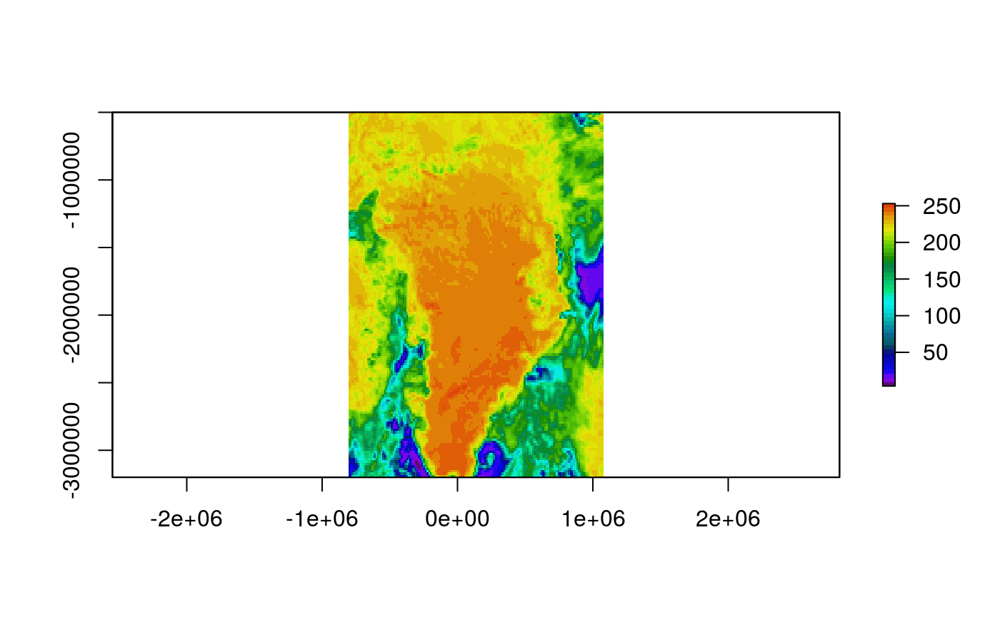

The goal of lazyraster is to get raster data on demand at the right resolution. This means that you can define a graphics device and then stream just the right amount of pixels to fill it from a GDAL data source.
Details
There are functions lazyraster() to act like the raster::raster() function and provide information but no data, and crop() to act like raster::crop() and then as_raster to break the lazy chain and build an actual raster object. The size of the currently open (or latent-default) device is used as a reasonable size for the output grid, but can be controlled by argument dim.
When the data is read lazyraster can specify the exact dimensions of the output raster, and by default a reasonable guess at the number of pixels required to fill the current device is used.
A variety of resampling algorithms are available (nearest neighbour is the default, see this list for more) and will be applied to reduce or increase the resolution.
Limitations
We can’t utilize the RasterIO level-of-detail functionality for non-GDAL sources.
We can only access a single band.
We can’t control the details of the data type.
GDAL
This uses a standard internal functionality of GDAL, the RasterIO function of the GDALRasterBand. This is used in a lot of different software, and is obviously pretty robust and well tested by the GDAL community, but I only really have experience with one product (commercial, now defunct) that used it extensively for live interactive visualization and data streaming. I haven’t found any problems with it at all using it in R, but the support for it is very minimal. You can access it indirectly using rgdal::readGDAL for the underlying function, as the raster package does.
vapour
To make this work we use the GDAL package vapour. All of the ease-of-use code is in this package, vapour is pointedly bare-bones and provides very little interpretation of a data source because it is designed for use in development.
Examples
Connect lazily to a GeoTIFF, see details of what’s there, crop to a section and then read it in and plot.
This is not a huge file, but is easily accessible and demonstrates the idea.
First we connect to a source and show two versions, the first is information about the data in its native form (286 rows and 143 columns), and then an actual RasterLayer but at a very small requested size (24 rows by 12 columns).
sstfile <- system.file("extdata/sst.tif", package = "vapour")
library(lazyraster)
#>
#> Attaching package: 'lazyraster'
#> The following object is masked from 'package:graphics':
#>
#> plot
lazy <- lazyraster(sstfile)
lazy ## stay lazy
#> class : LazyRaster
#> dimensions : 286, 143 (nrow, ncol)
#> resolution : 0.07000000, 0.07000389 (x, y)
#> extent : 140.00000, 150.01000, -60.01833, -39.99722 (xmin, xmax, ymin, ymax)
#> crs : <placeholder>
#> values : NA, NA (min, max - range from entire extent)
#> window extent : <whole extent>
#> window index : <->
## be only so lazy
as_raster(lazy, dim = c(12, 24))
#> class : RasterLayer
#> dimensions : 24, 12, 288 (nrow, ncol, ncell)
#> resolution : 0.8341667, 0.834213 (x, y)
#> extent : 140, 150.01, -60.01833, -39.99722 (xmin, xmax, ymin, ymax)
#> crs : NA
#> source : memory
#> names : layer
#> values : -3.4e+38, 289.478 (min, max)The call to as_raster read actual data from the file, hence the difference between the range of data values reported first from the whole extent, and then reported by raster itself for the resample data read in.
Now let lazyraster make its own choice about the size of the output. This will be based on the return value of dev.size("px").
## note how we actually resample up because this data is not very large
as_raster(lazy)
#> class : RasterLayer
#> dimensions : 480, 672, 322560 (nrow, ncol, ncell)
#> resolution : 0.01489583, 0.04171065 (x, y)
#> extent : 140, 150.01, -60.01833, -39.99722 (xmin, xmax, ymin, ymax)
#> crs : NA
#> source : memory
#> names : layer
#> values : -3.4e+38, 289.859 (min, max)More concretely, if we open a graphics device at a given size the raster data read in will match it. (This is not the best choice but works fine for demonstration and experimenting.)
## what do we get if we set up a bitmap device
tf <- tempfile(fileext = "png")
png(tf, height = 50, width = 40)
as_raster(lazy)
#> class : RasterLayer
#> dimensions : 50, 40, 2000 (nrow, ncol, ncell)
#> resolution : 0.25025, 0.4004222 (x, y)
#> extent : 140, 150.01, -60.01833, -39.99722 (xmin, xmax, ymin, ymax)
#> crs : NA
#> source : memory
#> names : layer
#> values : -3.4e+38, 289.815 (min, max)
#plot(as_raster(lazy))
dev.off()
#> png
#> 2
unlink(tf)This will work on really big files.
(This example can’t work on your computer probably given use of local raadtools, but try it on your favourite big file).
This takes a fairly large grid and plots just enough detail by reading just enough detail for the plot space. That’s all that happens.
library(raadtools)
#> Loading required package: raster
#> Loading required package: sp
#> global option 'raadfiles.data.roots' set:
#> '/rdsi/PRIVATE/raad/data 2019-10-03 12:35:12
#> /rdsi/PRIVATE/raad/data_local 2019-10-03 12:35:53
#> /rdsi/PRIVATE/raad/data_staging 2019-10-03 12:35:54
#> /rdsi/PRIVATE/raad/data_deprecated 2019-10-03 12:39:49
#> /rdsi/PUBLIC/raad/data 2019-10-03 10:53:19'
#> Uploading raad file cache as at 2019-10-03 12:41:12 (1017941 files listed)
f <- raadtools::topofile("gebco_14")
lazyraster(f)
#> class : LazyRaster
#> dimensions : 21600, 43200 (nrow, ncol)
#> resolution : 0.008333333, 0.008333333 (x, y)
#> extent : -180.0000, 180.0000, -90.0000, 90.0000 (xmin, xmax, ymin, ymax)
#> crs : <placeholder>
#> values : NA, NA (min, max - range from entire extent)
#> window extent : <whole extent>
#> window index : <->
library(raster)
op <- par(mar = rep(0, 4))
system.time({
rworld <- lazyraster(f)
plot(rworld, col = grey(seq(0, 1, length = 100)), axes = FALSE, xlab = "", ylab = "", asp = "", legend = FALSE)
})
Now, plot the same kind of image but zoom in on a region purposefully. The resolution provided has adapted to the context asked for.
rtas <- crop(rworld, extent(143.4, 149, -44, -39.1))
plot(rtas, col = grey(seq(0, 1, length.out = 64)), zlim = c(0, 1550))
rbath <- as_raster(rtas)
rbath[rbath > 0] <- NA
contour(rbath, add = TRUE, levels = quantile(rbath, prob = seq(0, 1, length.out = 8)))
title("Tasmania topography + bathymetric contours, from Gebco 2014", cex.main = 0.85)
This is not just to plot big rasters, it’s potentially useful for streaming gridded data to a device that is resizing the view port interactively. We also use it to explore a data set for useability and general coverage, and designing sensible resampling workflows for very large data models.
## PLEASE take care with this url, it is a 11Gb GeoTIFF
## https://astrogeology.usgs.gov/search/map/Mars/Topography/HRSC_MOLA_Blend/Mars_HRSC_MOLA_BlendDEM_Global_200mp_v2
dangerurl <- "https://planetarymaps.usgs.gov/mosaic/Mars/HRSC_MOLA_Blend/Mars_HRSC_MOLA_BlendDEM_Global_200mp_v2.tif"
## note prefix with GDAL's URL indirection
mars <- lazyraster(file.path("/vsicurl", dangerurl))
mars
#> class : LazyRaster
#> dimensions : 53347, 106694 (nrow, ncol)
#> resolution : 0.003374121, 0.003374121 (x, y)
#> extent : -180.00000, 179.99845, -89.99922, 90.00000 (xmin, xmax, ymin, ymax)
#> crs : <placeholder>
#> values : NA, NA (min, max - range from entire extent)
#> window extent : <whole extent>
#> window index : <->
plot(mars, col = grey(seq(0, 1, length = 256)))
as_raster(mars)
#> class : RasterLayer
#> dimensions : 480, 672, 322560 (nrow, ncol, ncell)
#> resolution : 0.535712, 0.3749984 (x, y)
#> extent : -180, 179.9984, -89.99922, 90 (xmin, xmax, ymin, ymax)
#> crs : NA
#> source : memory
#> names : layer
#> values : -7716, 20910 (min, max)
plot(crop(mars, raster::extent(-100, -30, -18, 5)),
col = grey(seq(0, 1, length = 256)))
We’ve successfully used it to plot a DEM of Australia from a 67 Gb ESRI binary grid (ADF) supplied by GeoScience Australia in a few minutes (the grid is more than 1e5 pixels each dimension, so I’m not having this document build do the job but here’s a figure I prepared earlier).

# Make a TMS source and read at the desired resolution.
# More here: http://rpubs.com/cyclemumner/358029
#
library(lazyraster)
gibs_xml <- function(date, level = 3) {
date <- format(date, "%Y-%m-%d")
sprintf('<GDAL_WMS>
<Service name="TMS">
<ServerUrl>
https://gibs.earthdata.nasa.gov/wmts/epsg3413/best/MODIS_Terra_CorrectedReflectance_TrueColor/default/%s/250m/${z}/${y}/${x}.jpg</ServerUrl>
</Service>
<DataWindow>
<UpperLeftX>-4194304</UpperLeftX>
<UpperLeftY>4194304</UpperLeftY>
<LowerRightX>4194304</LowerRightX>
<LowerRightY>-4194304</LowerRightY>
<TileLevel>%i</TileLevel>
<TileCountX>2</TileCountX>
<TileCountY>2</TileCountY>
<YOrigin>top</YOrigin>
</DataWindow>
<Projection>EPSG:3413</Projection>
<BlockSizeX>512</BlockSizeX>
<BlockSizeY>512</BlockSizeY>
<BandsCount>3</BandsCount>
</GDAL_WMS>
', date, level)
}
s <- gibs_xml(Sys.Date()-10)
gibs <- lazyraster(s)
r2 <- as_raster(gibs, dim = c(150, 150))
library(raster)
## run the same simplification but with a different resampling
## method
plot(as_raster(gibs, dim = c(150, 150), resample = "CubicSpline"), col = head(palr::sstPal(64), 45))
## run with a different extent
e <- extent(-806000, 1080000, -3200000, -500000)
plot(as_raster(crop(gibs, e), dim = c(150, 150), resample = "CubicSpline"), col = head(palr::sstPal(64), 45))
Please note that this project is released with a Contributor Code of Conduct. By participating in this project you agree to abide by its terms.